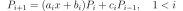
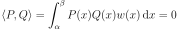
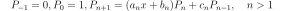

LaguerreFactory¶
(Source code, png, hires.png, pdf)
{kind=link}
{kind=link}
-
class
LaguerreFactory(*args)¶ Laguerre specific orthonormal univariate polynomial family.
For the
Gammadistribution.- Available constructors:
LaguerreFactory(k=1.0, ot.LaguerreFactory.ANALYSIS)
- Parameters
- kfloat
If parameters_set == ot.JacobiFactory.PROBABILITY: default shape parameter
 of the
of the Gammadistribution.If parameters_set == ot.JacobiFactory.ANALYSIS: alternative shape parameter of the
Gammadistribution.- parameters_setint, optional
Integer telling which parameters set is used for defining the distribution (amongst ot.LaguerreFactory.ANALYSIS, ot.LaguerreFactory.PROBABILITY).
Notes
Any sequence of orthogonal polynomials has a recurrence formula relating any three consecutive polynomials as follows:

The recurrence coefficients for the Laguerre polynomials come analytically and read:
where is the alternative shape parameter of the
Gammadistribution, and:Examples
>>> import openturns as ot >>> polynomial_factory = ot.LaguerreFactory() >>> for i in range(3): ... print(polynomial_factory.build(i)) 1 -1 + X 1 - 2 * X + 0.5 * X^2
- Attributes
thisownThe membership flag
Methods
build(degree)Build the
 -th order orthogonal univariate polynomial.
-th order orthogonal univariate polynomial.buildCoefficients(degree)Build the
-th order orthogonal univariate polynomial coefficients.Build the recurrence coefficients.
Accessor to the object’s name.
getId()Accessor to the object’s id.
getK()Accessor to the alternative shape parameter .
Accessor to the associated probability measure.
getName()Accessor to the object’s name.
Build the
-th order quadrature scheme.Accessor to the recurrence coefficients of the
-th order.getRoots(n)Accessor to the recurrence coefficients of the
-th order.Accessor to the object’s shadowed id.
Accessor to the object’s visibility state.
hasName()Test if the object is named.
Test if the object has a distinguishable name.
setName(name)Accessor to the object’s name.
setShadowedId(id)Accessor to the object’s shadowed id.
setVisibility(visible)Accessor to the object’s visibility state.
-
__init__(*args)¶ Initialize self. See help(type(self)) for accurate signature.
-
build(degree)¶ Build the
-th order orthogonal univariate polynomial.- Parameters
- kint,

Polynomial order.
- kint,
- Returns
- polynomial
OrthogonalUniVariatePolynomial Requested orthogonal univariate polynomial.
- polynomial
Examples
>>> import openturns as ot >>> polynomial_factory = ot.HermiteFactory() >>> print(polynomial_factory.build(2)) -0.707107 + 0.707107 * X^2
-
buildCoefficients(degree)¶ Build the
-th order orthogonal univariate polynomial coefficients.- Parameters
- kint,
Polynomial order.
- kint,
- Returns
- coefficients
Point Coefficients of the requested orthogonal univariate polynomial.
- coefficients
Examples
>>> import openturns as ot >>> polynomial_factory = ot.HermiteFactory() >>> print(polynomial_factory.buildCoefficients(2)) [-0.707107,0,0.707107]
-
buildRecurrenceCoefficientsCollection(degree)¶ Build the recurrence coefficients.
Build the recurrence coefficients of the orthogonal univariate polynomial family up to the
-th order.- Parameters
- kint,
Polynomial order.
- kint,
- Returns
- recurrence_coefficientslist of
Point All the tecurrence coefficients up to the requested order.
- recurrence_coefficientslist of
Examples
>>> import openturns as ot >>> polynomial_factory = ot.HermiteFactory() >>> print(polynomial_factory.buildRecurrenceCoefficientsCollection(2)) [[1,0,0],[0.707107,0,-0.707107]]
-
getClassName()¶ Accessor to the object’s name.
- Returns
- class_namestr
The object class name (object.__class__.__name__).
-
getId()¶ Accessor to the object’s id.
- Returns
- idint
Internal unique identifier.
-
getK()¶ Accessor to the alternative shape parameter .
Of the
Gammadistribution.- Returns
- k_afloat
Alternative shape parameter of the
Gammadistribution.
-
getMeasure()¶ Accessor to the associated probability measure.
- Returns
- measure
Distribution The associated probability measure (according to which the polynomials are orthogonal).
- measure
Notes
Two polynomials P and Q are orthogonal with respect to the probability measure
 if and only if their dot product:
if and only if their dot product:
where
 and
and
 .
.Examples
>>> import openturns as ot >>> polynomial_factory = ot.HermiteFactory() >>> print(polynomial_factory.getMeasure()) Normal(mu = 0, sigma = 1)
-
getName()¶ Accessor to the object’s name.
- Returns
- namestr
The name of the object.
-
getNodesAndWeights(n)¶ Build the
-th order quadrature scheme.Associated with the orthogonal univariate polynomials family.
- Parameters
- kint,

Polynomial order.
- kint,
- Returns
Examples
>>> import openturns as ot >>> polynomial_factory = ot.HermiteFactory() >>> nodes, weights = polynomial_factory.getNodesAndWeights(3) >>> print(nodes) [-1.73205,...,1.73205] >>> print(weights) [0.166667,0.666667,0.166667]
-
getRecurrenceCoefficients(n)¶ Accessor to the recurrence coefficients of the
-th order.Of the orthogonal univariate polynomial.
- Parameters
- kint,
Polynomial order.
- kint,
- Returns
- recurrence_coefficients
Point The recurrence coefficients of the
-th order orthogonal
univariate polynomial.
- recurrence_coefficients
Notes
Any sequence of orthogonal polynomials has a recurrence formula relating any three consecutive polynomials as follows:

Examples
>>> import openturns as ot >>> polynomial_factory = ot.HermiteFactory() >>> print(polynomial_factory.getRecurrenceCoefficients(3)) [0.5,0,-0.866025]
-
getRoots(n)¶ Accessor to the recurrence coefficients of the
-th order.Of the orthogonal univariate polynomial.
- Parameters
- kint,
Polynomial order.
- kint,
- Returns
- roots
Point The roots of the
-th order orthogonal univariate polynomial.
- roots
Examples
>>> import openturns as ot >>> polynomial_factory = ot.HermiteFactory() >>> print(polynomial_factory.getRoots(3)) [-1.73205,...,1.73205]
-
getShadowedId()¶ Accessor to the object’s shadowed id.
- Returns
- idint
Internal unique identifier.
-
getVisibility()¶ Accessor to the object’s visibility state.
- Returns
- visiblebool
Visibility flag.
-
hasName()¶ Test if the object is named.
- Returns
- hasNamebool
True if the name is not empty.
-
hasVisibleName()¶ Test if the object has a distinguishable name.
- Returns
- hasVisibleNamebool
True if the name is not empty and not the default one.
-
setName(name)¶ Accessor to the object’s name.
- Parameters
- namestr
The name of the object.
-
setShadowedId(id)¶ Accessor to the object’s shadowed id.
- Parameters
- idint
Internal unique identifier.
-
setVisibility(visible)¶ Accessor to the object’s visibility state.
- Parameters
- visiblebool
Visibility flag.
-
thisown¶ The membership flag